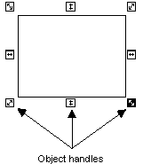
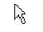
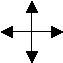
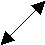
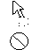
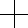
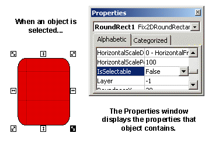
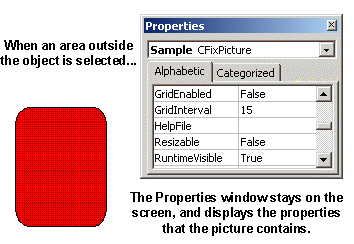
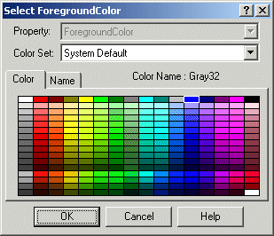

Basic drawing tools
The DeltaV Operate configuration environment contains several aids that help you access and modify an object's characteristics.
Types of Cursors
Cursors appear when you have selected an object and place the cursor over the object's handles. The handles of an object provide points that control the movement of the object. Object handles appear in three types, depending on the operation you are trying to perform:
Resize handles - Allow you to resize an object. These automatically appear when you initially add most any object.
Reshape handles - Allow you to reshape an object. These automatically appear when you initially add lines, arcs, chords, and pies.
Rotate handles - Allow you to rotate an object. These handles only appear when you rotate a particular object (excluding ovals, rounded rectangles, charts, and bitmaps).
The following example illustrates a rectangle with resize handles. When you initially add an object, object handles appear. If you select outside the object, its handles disappear. Place the cursor on the object and click (select) the object to display the handles again.

The following table shows each cursor that is available, where it can be accessed in DeltaV Operate, and what the cursor allows you to do.
|
The Cursor... |
Positioned... |
Does this... |
|---|---|---|
|
 |
In a DeltaV Operate document outside of an object; or anywhere in the system tree. |
Selects an object or folder in the system tree, begins clicking and dragging objects (left-click), or displays a picture pop-up window (right-click). |
|
Anywhere on your screen. |
Alerts you that the system is working and no input can currently be processed. |
|
|
 |
On an object or group of objects. |
Selects an object (single-click), displays the pop-up menu (right-click), moves an object by clicking and dragging, or displays the Animations dialog box (double-click). |
|
On the up/down object handle, or at top or bottom edge of picture. |
Resizes an object or picture up or down. |
|
|
On the left/right object handle, or at top or bottom edge of picture. |
Resizes an object or picture left or right. |
|
|
 |
On the diagonal object handle, or at top or bottom edge of picture. |
Resizes an object or picture diagonally. |
|
Right edge of system tree. |
Expands the system tree. |
|
|
 |
In system tree, dragging into picture. |
Drags and drops objects or Dynamos to a picture. The second cursor indicates that the location you are dropping to is not valid. |
|
In the Edit Color palette when customizing colors. |
Selects a color range. |
|
|
On objects with points. |
Adds or deletes a point of an object. The white cursor on the left indicates that a point cannot be added. The black cursor on the right indicates a point can be added. |
|
|
 |
Anywhere when adding or reshaping shapes, charts, or data links. Also appears on an object's center of rotation circle. |
Provides a starting point to add or reshape a shape, chart, or data link by clicking and dragging to a location. As a rotation cursor, selects the center of rotation so that you can relocate it by clicking and dragging the circle. |
Context Menu for Objects
To display an object's context menu, right-click the object. This menu provides quick access to the object's properties and animations, as well as common operations you can perform with the object, such as copying and pasting.
You can also access this menu by right-clicking the object in the Pictures directory of the system tree. This is an effective way to view or adjust properties for invisible objects (which only appear in the system tree) added during animation.
The following table shows the functions that are available from the object context menu. Depending on the object you have selected, additional operations may be available.
|
Animations |
Display the Animations dialog box, which allows you to animate the properties of an object or several objects. |
|
Resize |
Display handles around the object so you can resize it. |
|
Rotate |
Display rotate handles around the object so you can move the object around its center of rotation. |
|
Undo |
Cancel the previous operation. |
|
Cut |
Remove the object from the picture and places it into the clipboard. |
|
Copy |
Create a duplicate copy of the object and place it into the clipboard. |
|
Delete |
Remove the object from the picture. |
|
Duplicate |
Create a duplicate copy of the object and place it slightly offset from the original. |
|
Group |
Combine one or more objects into one grouped object. |
|
Bring to Front |
Move the selected object to the front or top of the picture. |
|
Send to Back |
Move the selected object to the back or bottom of the picture. |
|
Color |
Define foreground, background, and edge colors using a color palette. |
|
Fill Style |
Specify a fill style of one of the following: Solid Hollow Horizontal Vertical DownwardDiagonal UpperDiagonal CrossHatch DiagonalCrossHatch Refer to Coloring and Styling Objects in the topic Performing Advanced Functions with Objects for further information on fill styles. |
|
Edge Style |
Specify an edge style of one of the following: Solid - Applies a solid line style Dash - Applies a dashed pen line style Dot - Applies a dotted pen line style DashDot - Applies a dash-dot combination line style DashDotDot - Applies a dash-dot-dot combination line style No Edge - Specifies that the object contains no edge style InsideFrame - Applies a solid line style inside the frame of the object |
|
Background Style |
Specify a background style of either opaque or transparent. |
|
Edit Script |
Open the Visual Basic Editor, which allows you to edit Visual Basic scripts. |
|
Property Window |
Display the Properties Window, which allows you to view and change property values. |
Depending on the object you add, the pop-up menu may vary to include operations specific to that object. For example, if you add a chart, you can access the Chart Configuration dialog box from the object pop-up menu.
Properties Window for Objects
To display the Properties window of an object, right-click the object and select Property Window from the context menu. You can also access this menu by right-clicking the object in the Pictures directory in the system tree, or by selecting Property Window from the View menu.
The Properties window displays a two-column list of the selected object's properties that accept data. The Properties window is modeless, meaning that you can jump to different positions in the picture and the window will stay on your screen. This is a convenient way to quickly read properties of several objects in your picture or a picture itself. If no object is selected, the current picture's properties are shown in the window. See the following examples.


You can also display the properties for a different object by selecting the object or picture from the drop-down list at the top of the Properties window.
The Color Box
The DeltaV Operate color box contains all the tools you need to assign colors for your objects and create customized color schemes. DeltaV Operate supports color depth up to 32 bit.
If you change the screen resolution on the remote client system, it may be necessary to reset the color depth setting to 32 bit.
There are two color boxes you can choose from depending on how you want to apply colors. The first option is a Select Color box which lets you select a foreground, background, or edge color for a specific object. This dialog box, shown in the following figure, is accessed by right-clicking the object and selecting Color from the pop-up menu. You then choose either Foreground, Background, or Edge from the menu.

The second option is the Color Selection box. This box is modeless, allowing you to select different shapes in your picture while the dialog box remains on your screen. You can color as many objects as you like using this box, and you can choose which property of the selected object or objects you want to modify. Additionally, you can use a color palette to customize a color set. The Color Selection dialog box, shown in the following figure, is accessed by clicking the Color button on the Tools toolbar or the Toolbox, if enabled.
Any time you open the Select Color or Color Selection dialog box, the undo stack is removed.
For more information on applying color to your pictures, refer to Working with Color in the topic Designing Your Pictures.
Animations Dialog Box
The Animations dialog box lets you change properties by entering values into one of the tabbed pages. To access the Animations dialog box, double-click an object, or right-click a selected object and select Animations from the pop-up menu.
Any time you open the Animations dialog box, the undo stack is removed. This is because certain property changes take effect even if the dialog box is closed using the Cancel button.
Refer to Animating Object Properties for more information on animating objects.
Screen Regions
As you create pictures in DeltaV Operate, you can optimize the speed at which your pictures update by using screen regions. The viewport is divided into 30 screen regions (6 by 5) which determine how pictures are updated. By grouping dynamically changing objects into screen regions, static objects are not unnecessarily redrawn each time a picture is updated.
To view screen regions in DeltaV Operate, select Screen Regions from the View menu. When this feature is enabled, each time you click on an object in a picture, the screen region it occupies changes color.
When using screen regions to optimize a picture, the picture should be displayed as it would be during production. Screen regions are calculated based on the viewport, and since the viewport is ultimately defined be the picture window, any changes to the window size cause the size of the screen regions to change.